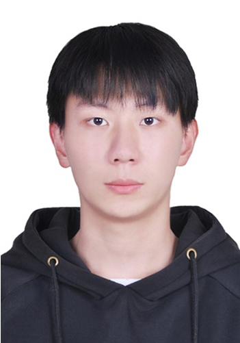

|
Yuchen Tai (Tyson)
Phone: +86 180-4968-9749
Email: tyc990328@163.com
Address: Room 526, College of Engineering South Building, Southern University of Science and Technology, 1088 Xueyuan Avenue, Shenzhen, China
Birthday: 1999/3 | Gender: Male
|

|
|
EDUCATION
- Sept. 2021-Jul. 2022: M.S.c. in Wireless Communication & Signal Processing,
Faculty of Engineering, University of Bristol, UK.
- Sept. 2017-Jul. 2021: B.S. in Electronic System Engineering,
School of Computer Science & Electronic Engineering, University of Essex, UK.
WORKING EXPERIENCE
- Jul. 2023-Present: Research assistant in Wireless AI Lab, Department of Electrical and Electronic Engineering, Southern University of Science and Technology (SUSTech), China.
Supervisor: Prof. Yi Gong & Dr. Yuan Zeng.
Project:Signal Modulation Classification via Meta-Learning.
Feature extraction and learning of different modulated signals based on the method of few-shot learning, which in turn achieves a high accuracy modulation classification using a small number of data samples.
- Oct. 2022-May. 2023: Research assistant in Key Lab. for Physical Electronics and Device of the Ministry of Education, Faculty of Electronic Science and Engineering, Xi’an Jiaotong University (XJTU), China.
Supervisor: Prof. Shengli Wu & Prof. Wenbo Hu.
Project: Preparation and Research of Electron Multiplier.
- The performance enhancement of electron multipliers was investigated in terms of physical structure, using bilayer substrate structure to enhance the electron collection efficiency.
- Simulation experiments were carried out using CST and the results show that the performance of the proposed structure is higher than that of the conventional single-layer substrate structure.
- Sep. 2021-Dec. 2022: Postgraduate student in Faculty of Engineering, University of Bristol.
Supervisor: Prof. Martin Cryan & Dr. Valery Xing.
Project: A PID Tunning Method Basee on Adaptive PSO.
- The convergence speed and convergence accuracy of particle swarm algorithm (PSO) were optimised by using an adaptive inertia weights method.
- Simulation experiments are carried out on a second order time lag model and the results are superior to the manual tuning method, the basic PSO algorithm, and the genetic algorithm.
- Sep. 2017-Jun. 2021: Undergraduate student in School of CS & EE, University of Essex.
Supervisor: Dr. Morteza Varasteh.
Project: Facial Emotion Recognition.
Real-time recognition of human facial emotions using convolutional neural networks resulted in an average recognition accuracy above 72%.
PROFESSIONAL SKILLS
- Software Tools: Matlab, Python, Multisim, CST Studio, Xilinx Vivado, Ubuntu system etc.
- Theoretical Knowledge: Deep Learning, Optimisation Algorithms, Automation Theory, FPGA, etc.
KEY COMPETENCE
- Solid background in Signal Processing, Programming, Mathematics, Electronics.
- Experience in programming, such as Neural Network Construction, Mathematical Modelling, Optimization Algorithm Design.
- Experience in simulation such as Electronic Multiplier, PID Controller, FPGA.
- Basic frequency domain analysis methods such as STFT, Wavelet Transform, Spectrum Analysis, Cross-correlation Function.
- Outstanding literature exploring, reading, and technical writing capabilities and excellent English listening and oral communication skills.
MAIN AWARDS
- Jun 2021: Graduated with First Class Degree from University of Essex.
- Feb 2020: Honorable Mention in Mathematical Contest In Modeling.
PUBLICATION LIST
PAPER (* indicates corresponding author)
- Z. Xia, B. Liu, J. Li, Y. Tai, W. Hu and S. Wu, "A bilayer substrate dynode for the performance improvement of box-and-grid electron multiplier," 2023 24th International Vacuum Electronics Conference (IVEC), Chengdu, China, 2023, pp. 1-2, doi: 10.1109/IVEC56627.2023.10157752.
- Yuchen Tai, Yi Gong*, Yuan Zeng*, Signal Modulation Classification Via Meta Learning. (In preparation)